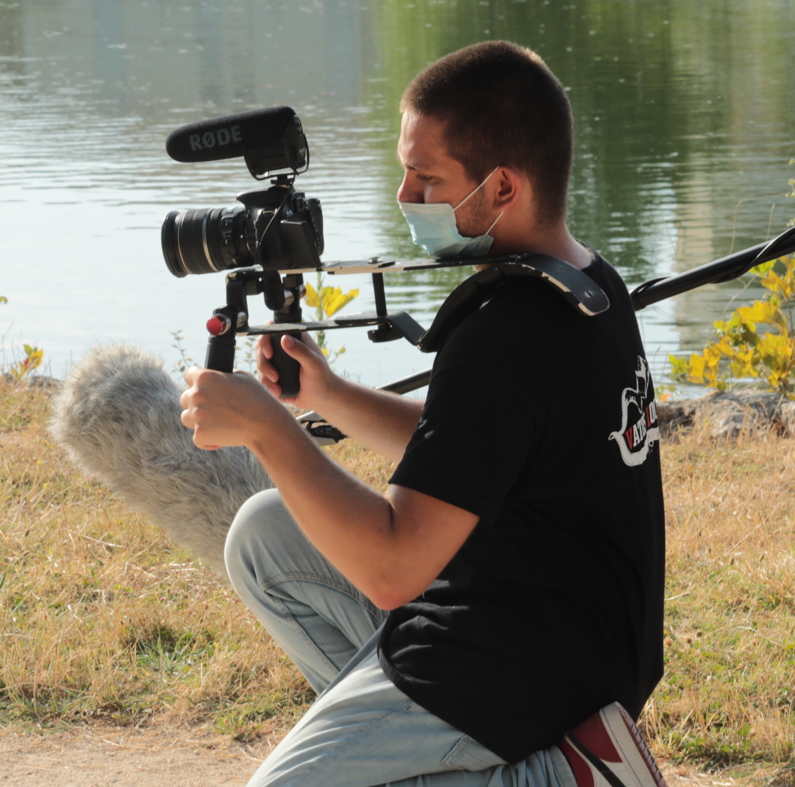

CRÉATEUR DE CONTENU AUDIOVISUEL

William FRANC
20 ans
Marseille FRANCE
William FRANC est aujourd'hui étudiant, en 3ème année de licence en art du spectacle. Le monde de l'audiovisuel est pour lui une réelle vocation. C'est à travers le monde du spectacle et de la musique qu'il découvre la vidéo. Il débute en gérant la captation vidéo de ses différents concerts, du collège jusqu'au lycée. À la suite de l'optention de son diplôme, un baccalauréat scientifique, option cinéma, il se lance dans des études d'audiovisuel. Il a eu l'occasion également, au sein de l'association Vatos Locos Video, de réaliser un service civique, ce qui lui a permis de concillier sa passion et le monde professionel, tout en continuant d'apprendre et de transmettre. Durant toutes ses années, il a pu acquerir une experience diversifiée, dans la réalisation, le tournage, la post-production, tout en cotoyant des plateaux de tournage professionnel, en tant qu'acteur de complément ou bien en tant que technicien.
De la conception à la diffusion
Conseil
Accompagnement personalisé, dans l'écriture de votre projet. Conception sur-mesure afin de servir à la fois le sens et la forme de votre projet.
Production
Budgéter, planifier, tourner, maitrise de l'ensemble de la chaine de production.
Post-production
Montage, étalonnage, mixage du son, habillage graphique. Création des differents masters HD, 4K, adaptés à tous les supports et canaux de diffusion.